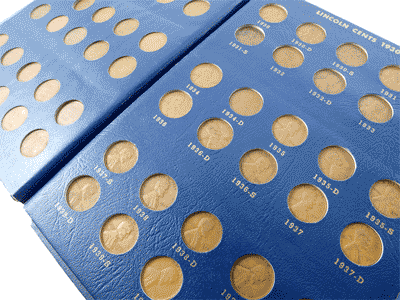

Coin Collecting
I love to collect coins. It all started when I found out about a penny that was worth more than a million dollars. Rare 1943 Lincoln penny sells for $1 million | Fox News Who wouldn't want that? I decided to check all of my coins. I didn't find the penny, but I was already hooked. Then my brother got a coin collecting book, and as I was looking through it, I was intrigued at how many different types of coins there are. But that was only the start. I collected the State and National Park Quarters. I collected pennies from 1959-2008, and tons of other types of coins. I even wrote a booklet about all of the different coins and when they came out! Here is a link for that booklet: A history of US coins I haven't gotten a coin that is worth millions of dollars yet, but some of my coins are worth one hundred dollars or more, and I got them for their face value! Plus, coin collecting is fun, and worthwhile. I love to look through piles of coins and find something to add to my coin collection. I love to collect coins, and so should you!
